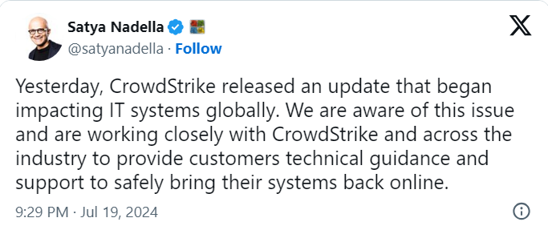

Satya Nadella After Global IT Outage
Millions of Windows users across the globe are experiencing the Blue Screen of Death (BSOD) error which is causing the system to suddenly shut down or restart. Microsoft in a message said that the error is being caused due to a recent CrowdStrike update. Microsoft said its outage started with a subset of its customers experiencing issues with multiple Azure services in the Central US region. Azure is a cloud computing platform that provides services for building, deploying, and managing applications and services. Separately, Microsoft said it was investigating an issue impacting various Microsoft 365 apps and services.
Comments
hero: many are facing this problem.
tom: AlL are working stop working due to this problem .